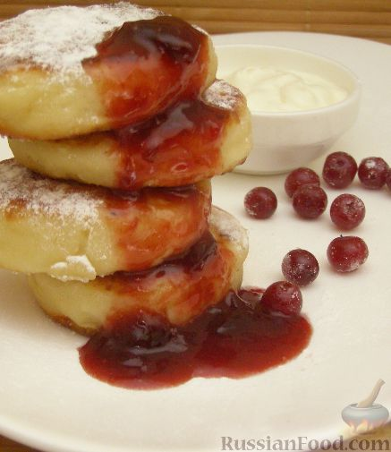

Содержание страницы
Сырники классические
Вниз

Классические сырники - что может быть лучше на завтрак!
Да еще со сметанкой или вареньем...
Думаю, вам подойдет этот рецепт сырников.
Продукты
- Творог-500 г
- Мука 0,5-0,75 стакана
- Яйца-1 шт
- Сахар-2 ст.ложки
- Масло(желательно топленое)-20-30 г
- Соль-0,25 ч.ложки
Как бы много ни было рецептов сырников, но классический рецепт сырников
всегда остается востребованным. Итак, предлагаем рецепт сырников классический.
| Количество порций |
Время приготовления |
| 6 |
40 минут |
Пошаговый фото рецепт
- Подготовить ингредиенты для приготовления сырников классических.
- Творог хорошо растереть в миске.
- Добавить муку, яйцо, сахар, соль.
- Тщательно перемешать. Тесто должно быть очень мягким, но не должно липнуть к рукам.
При необходимости (например, если творог жирный, влажный), можно добавить еще муки.
- Посыпать стол мукой. Массу скатать в форме колбаски диаметром около 5 см,
нарезать поперек на равные куски толщиной 1 см. Куски обвалять в муке.
- В сковороде на среднем огне разогреть масло.
Сырники обжарить с двух сторон на сковороде с топленым маслом.
Сначала 4-5 минут с одной стороны.

- Затем 4-5 минут с другой стороны.
- К сырникам отдельно подать сметану или варенье.

Перейти на сайт с рецептами
Конец страницы
Наверх